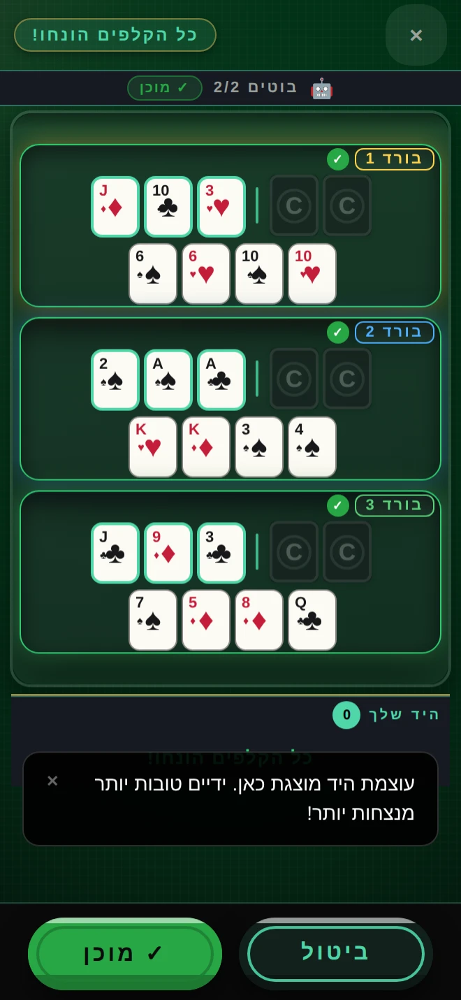
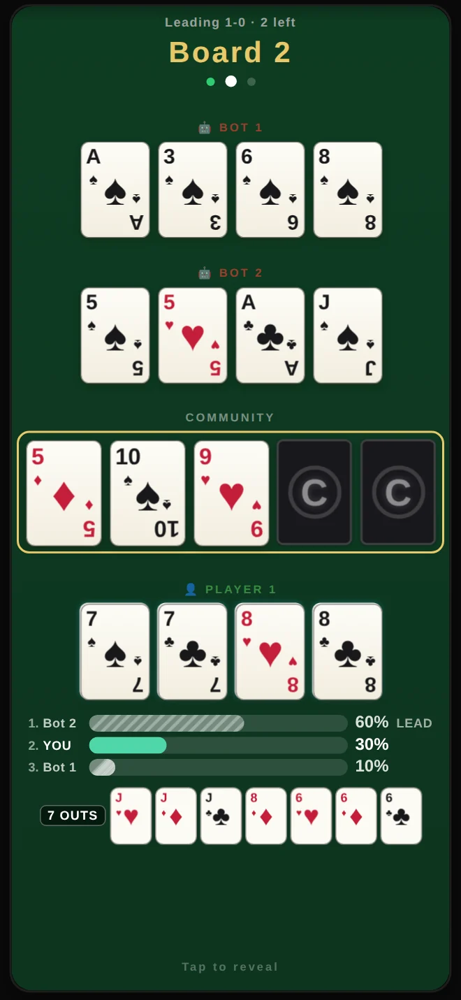

CAPS POKER
More than one way to win — every hand. יותר מדרך אחת לנצח, בכל יד.
Multi-board poker: four cards on every board, all played at once. Win the most boards, win the hand. פוקר על מספר בורדים: 4 קלפים לכל בורד, וכולם משוחקים בבת אחת. מנצחים בהכי הרבה בורדים — מנצחים ביד.

Tap and you're dealt in. Nothing to download, no account to make. הקשה אחת ומתחילים לשחק. אין מה להוריד, אין צורך בחשבון.

What is this game?מה המשחק הזה?
CAPS is multi-board poker. You’re dealt four cards on every board, and every board plays at the same time — take the most boards to win the hand. CAPS הוא פוקר על מספר בורדים. מחלקים 4 קלפים לכל בורד, וכל הבורדים משוחקים בו-זמנית — מנצחים בהכי הרבה בורדים כדי לזכות ביד.
Is it free?זה חינם?
Yes — free to play, with optional in-app purchases. You start with virtual chips and earn more just by playing, so you never have to pay to keep going. כן — חינם לשחק, עם רכישות אופציונליות בתוך האפליקציה. מתחילים עם צ'יפים וירטואליים וצוברים עוד תוך כדי משחק, כך שאף פעם לא חייבים לשלם כדי להמשיך.
Do I need to install anything?צריך להתקין משהו?
No. It runs right here in your browser. One tap and you’re in — no app store, no download. לא. זה רץ ישירות בדפדפן. הקשה אחת ומשחקים — בלי חנות אפליקציות, בלי הורדה.
Is it gambling?זה הימורים?
No. You play with virtual chips that have no cash value — no real-money prizes, and nothing you win can be cashed out. It’s poker for the game itself. 18+. לא. משחקים עם צ'יפים וירטואליים שאין להם ערך כספי — אין פרסים בכסף אמיתי, ואי אפשר לפדות למזומן שום דבר שזוכים בו. זה פוקר לשם המשחק עצמו. 18+.
Free play · Virtual chips only · No real-money gambling · 18+ משחק חינם · צ'יפים וירטואליים בלבד · אין הימורים בכסף אמיתי · 18+ A poker game for entertainment — no cash prizes, no payouts, no purchase required to play. משחק פוקר לבידור — אין פרסים במזומן, אין תשלומים, ואין צורך ברכישה כדי לשחק. Success at social gaming does not imply future success at real-money gambling. הצלחה במשחקי חברה אינה מבטיחה הצלחה עתידית בהימורים בכסף אמיתי.